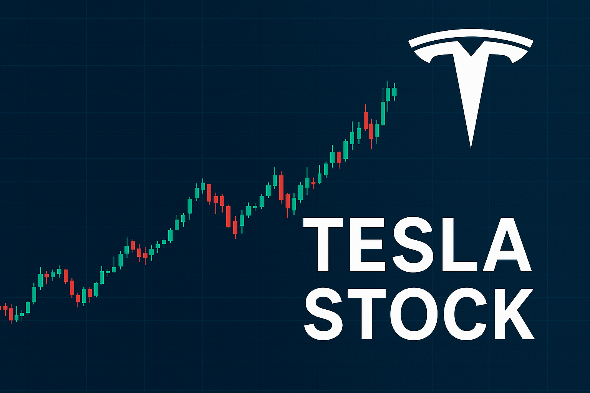

<!DOCTYPE html>
<html lang="en">
<head>
  <meta charset="UTF-8" />
  <meta http-equiv="Content-Language" content="en" />
  <meta name="viewport" content="width=device-width, initial-scale=1.0" />

  <!-- SEO Title -->
  <title>Tesla Stock: Analysis, Price Trends, and Investor Insights</title>

  <!-- SEO Meta -->
  <meta name="description" content="Explore Tesla stock (TSLA), including latest financial results, market trends, analyst insights, and key factors driving its performance. Learn if Tesla is the right investment for your portfolio." />
  <meta name="robots" content="index, follow" />
  
  <link rel="canonical" href="https://www.loansimulatorusa.com/tesla-stock.html" />

  <!-- Open Graph -->
  <meta property="og:title" content="Tesla Stock: Analysis, Price Trends, and Investor Insights" />
  <meta property="og:description" content="Discover the latest Tesla stock performance, earnings results, and market analysis. Insights for investors on TSLA trends, Elon Musk's share purchases, and growth prospects." />
  <meta property="og:type" content="article" />
  <meta property="og:url" content="https://www.loansimulatorusa.com/tesla-stock.html" />
  <meta property="og:site_name" content="LoanSimulatorUSA" />
  <meta property="og:image" content="https://www.loansimulatorusa.com/images/tesla-stock.jpg" />

  <!-- Twitter Card -->
  <meta name="twitter:card" content="summary_large_image" />
  <meta name="twitter:title" content="Tesla Stock: Analysis, Price Trends, and Investor Insights" />
  <meta name="twitter:description" content="Get a deep dive into Tesla stock, including latest financial results, analyst opinions, and market performance. Key insights for investors considering TSLA." />
  <meta name="twitter:image" content="https://www.loansimulatorusa.com/images/tesla-stock.jpg" />
  <meta name="twitter:site" content="@LoanSimulatorUSA" />

  <!-- Google Fonts (Performance Optimized) -->
  <link rel="preconnect" href="https://fonts.googleapis.com" />
  <link rel="preconnect" href="https://fonts.gstatic.com" crossorigin />
  <link href="https://fonts.googleapis.com/css2?family=Playfair+Display:wght@700&family=Nunito:wght@400;600&display=swap" rel="stylesheet" />

  <!-- Styles -->
  <link rel="stylesheet" href="tes3.css" />

  <!-- Favicon -->
  <link rel="icon" href="https://www.loansimulatorusa.com/images/favicon.ico" type="image/x-icon" />

  <!-- JSON-LD Schema.org (Article) -->
  <script type="application/ld+json">
  {
    "@context": "https://schema.org",
    "@type": "Article",
    "headline": "Tesla Stock: Analysis, Price Trends, and Investor Insights",
    "description": "Comprehensive analysis of Tesla stock, including earnings, market trends, analyst insights, and factors affecting TSLA performance. Key information for investors.",
    "author": {
      "@type": "Person",
      "name": "Mohamed Saoudi"
    },
    "publisher": {
      "@type": "Organization",
      "name": "LoanSimulatorUSA",
      "logo": {
        "@type": "ImageObject",
        "url": "https://www.loansimulatorusa.com/images/logo3.svg"
      }
    },
    "datePublished": "2025-09-15",
    "dateModified": "2025-09-15",
    "image": "https://www.loansimulatorusa.com/images/tesla-stock.jpg",
    "mainEntityOfPage": {
      "@type": "WebPage",
      "@id": "https://www.loansimulatorusa.com/tesla-stock.html"
    }
  }
  </script>

  <!-- FAQ JSON-LD for Tesla Stock -->
  <script type="application/ld+json">
  {
    "@context": "https://schema.org",
    "@type": "FAQPage",
    "mainEntity": [
      {
        "@type": "Question",
        "name": "Why is Tesla stock rising?",
        "acceptedAnswer": {
          "@type": "Answer",
          "text": "Tesla stock has surged due to strong earnings reports, CEO Elon Musk’s personal investment, growing EV demand, and positive analyst outlooks on the company's expansion."
        }
      },
      {
        "@type": "Question",
        "name": "What are Tesla's key financial metrics to watch?",
        "acceptedAnswer": {
          "@type": "Answer",
          "text": "Investors focus on revenue growth, gross margins, vehicle deliveries, energy sales, and R&D investment as key metrics for Tesla's performance."
        }
      },
      {
        "@type": "Question",
        "name": "How does Elon Musk's $1B stock purchase affect TSLA?",
        "acceptedAnswer": {
          "@type": "Answer",
          "text": "Musk’s purchase signals confidence in the company, often boosting investor sentiment and short-term stock performance."
        }
      },
      {
        "@type": "Question",
        "name": "Is Tesla stock a good long-term investment?",
        "acceptedAnswer": {
          "@type": "Answer",
          "text": "Tesla's long-term potential depends on EV adoption, production capacity, innovation in battery technology, and market competition. Investors should assess risk tolerance and portfolio diversification."
        }
      },
      {
        "@type": "Question",
        "name": "Which companies are Tesla's main competitors?",
        "acceptedAnswer": {
          "@type": "Answer",
          "text": "Tesla competes with legacy automakers like Toyota and Honda, as well as EV-focused companies like Rivian, Lucid, and BYD."
        }
      }
    ]
  }
  </script>
</head>


</body>
</html>


  <!-- Styles -->
  <link rel="stylesheet" href="tes3.css" />
  <style>
    /* Surlignage texte */
    .highlight mark {
      background-color: yellow;
      color: black;
    }
  </style>
</head>
<body>
<header class="site-header">
  <div class="container header-inner">
    <!-- Ligne 1 : logo + hamburger -->
    <div class="header-top">
      <a href="index.html" class="logo">
        
      </a>
      <button class="hamburger" aria-label="Menu" aria-expanded="false">
        <span></span><span></span><span></span>
      </button>
    </div>

    <!-- Ligne 2 : barre de recherche -->
    <form class="search-form" action="#" method="get">
      <div class="search-wrapper">
        <input
          type="text"
          id="header-search-input"
          name="query"
          class="search-input"
          placeholder="Search..."
          aria-label="Search content"
          autocomplete="off"
        />
      </div>
    </form>

    <!-- Menu mobile stylisé -->
    <nav class="main-nav" id="main-nav">
      <ul>
        <li><a href="privacy.html">Privacy</a></li>
        <li><a href="index.html">Simulator</a></li>
        <li><a href="schedule.html">Schedule</a></li>
        <li><a href="contact.html">Contact</a></li>
      </ul>
    </nav>
  </div>
</header>

<main>
  <div class="container">
    <!-- Hero -->
   <section class="hero-card">
  <div class="profile">
    <!-- Colonne gauche -->
    <div class="profile-left">
      
      <span class="tag">Mohamed Saoudi, Finance Writer</span>
    </div>

    <!-- Colonne droite -->
    <div class="profile-right">
<h1>tesla stock<h1>

<p>
Tesla Inc. (NASDAQ: TSLA) continues to capture the attention of investors worldwide. With CEO Elon Musk recently investing $1 billion of his own money into the company, Tesla’s stock saw a notable jump, reflecting renewed confidence in its growth trajectory. In this article, we’ll explore the latest financial results, market trends, and analyst insights driving Tesla’s performance. From the company’s innovative electric vehicles and energy solutions to its global expansion and future pipeline, you’ll gain a clear understanding of why Tesla remains a dominant player in the automotive and clean energy sectors. By the end, you’ll be better equipped to evaluate whether adding Tesla stock to your portfolio aligns with your investment goals.
</p>

<p>
Investors often compare Tesla’s market performance against peers like Toyota, Honda, and emerging EV startups to understand its competitive edge. Key factors include revenue growth, profit margins, innovation in battery technology, and adoption of autonomous driving software. Understanding these elements can help investors gauge whether Tesla stock is positioned for long-term growth or faces potential volatility.
</p>

<p>
Whether you’re considering a short-term trade or a long-term investment, analyzing Tesla’s stock trends, financial metrics, and market catalysts—such as Elon Musk’s recent share purchase—provides critical insight. This article also highlights potential risks and opportunities, giving investors a comprehensive view of Tesla’s market standing and future prospects.
</p>

      <div class="cta-buttons">
        <a href="index.html" class="btn btn-primary">Try Simulator</a>
        <a href="contact.html" class="btn btn-outline">Contact Me</a>
        <a href="index.html" class="btn btn-primary">Start Your Plan</a>
        <a href="privacy.html" class="btn btn-outline">Learn About Privacy</a>
      </div>
    </div>
  </div>
</section>

  <!-- =========================
       ARTICLES RÉCENTS (TEASERS)
  ========================= -->
  
  <!-- ARTICLES TEASERS -->
  <div class="container">
    <section class="article-teasers" aria-label="Articles récents">
      <div class="teaser-card">
        <h3><a href="#">Should You Use a Robo-Advisor to Manage Your Retirement Portfolio?</a></h3>
        <p>
          Imagine sipping your morning coffee while an algorithm automatically rebalances your retirement
        </p>
        <a href="robo-advisors-guide.html" class="read-more">Read more →</a>
      </div>
      <div class="teaser-card">
        <h3><a href="#">How Can You Cut Costs Without Sacrificing Your Lifestyle During Inflation?</a></h3>
        <p>
          If you’ve scrolled through social media or read the news lately, you’ve heard it a thousand times...
        </p>
        <a href="cut-costs-inflation.html" class="read-more">Read more →</a>
      </div>
    </section>
  </div>

  <!-- EMPTY ARTICLE SECTION FOR FUTURE CONTENT -->
  <div class="container" id="article-container">
    <section class="article-content">
<article>
  <h1>Tesla Stock Today: A Deep Dive into Trends, Support Levels, and the Road Ahead</h1>
  <p>
    Tesla has always been more than just another car company. For years, it has captured the imagination of investors who see it not only as a pioneer of the electric vehicle revolution but also as a company with the potential to reshape transportation, energy, and even artificial intelligence. This unique position makes Tesla’s stock one of the most closely followed assets in the world, attracting both long-term believers and short-term traders seeking to capitalize on its volatility. In recent weeks, Tesla stock has once again been at the center of financial news, with market watchers debating whether it is gearing up for another rally or facing the possibility of a pullback.
  </p>
  <p>
    The discussion around Tesla’s stock today is particularly intense because it sits near important price levels that could define its short-term and medium-term trajectory. On one hand, the company continues to demonstrate growth potential, driven by innovations in AI, energy storage, and robotaxis. On the other hand, challenges such as competition from other electric vehicle manufacturers, regulatory scrutiny, and macroeconomic pressures like inflation and interest rate policies create uncertainty. Understanding Tesla’s current situation requires looking at both the technical and fundamental sides of the story.
  </p>
  
<div class="image-gallery" aria-label="Galerie d’illustrations">
          <figure class="image-card">
            
            <figcaption>tesla-stock</figcaption>
          </figure>
          <figure class="image-card">
            
            <figcaption>tesla-stock</figcaption>
          </figure>
        </div>
  <p>
    From a technical perspective, analysts have identified clear areas of support and resistance that traders are watching closely. Resistance is evident around four hundred thirty-six dollars, which has historically been a ceiling that the stock struggles to break through. Just below that, another resistance zone between four hundred five and four hundred fourteen dollars has also proven to be a tough barrier. On the downside, immediate support appears around three hundred seventy-eight dollars and fifty cents, with an intermediate support range between three hundred fifty-two and three hundred sixty-one dollars. If selling pressure deepens, Tesla could test lower supports in the three hundred twenty to three hundred thirty dollar range, or even dip toward three hundred if negative catalysts emerge.
  </p>
  <p>
    These levels are not just abstract numbers. They represent the psychology of the market. When Tesla approaches resistance, it often means that many investors who bought at higher levels are looking to sell and recover their money, creating downward pressure. Conversely, when the stock nears support, buyers often step in because they see it as a discount compared to recent prices. This constant tug of war between buyers and sellers is what creates the volatility that Tesla has become known for.
  </p>
  <p>
    But Tesla’s story cannot be told through charts alone. Its stock price is heavily influenced by headlines, innovations, and the words of its CEO, Elon Musk. Musk’s announcements—whether about progress in self-driving technology, breakthroughs in battery efficiency, or his ambitious vision for a robotaxi network—often spark strong reactions in the market. Investors know that Tesla is not just a car manufacturer; it is positioned as a tech company, and that perception is what drives its premium valuation. Even small developments in AI integration or energy solutions can have outsized effects on investor sentiment.
  </p>
  <p>
    At the same time, Tesla is not immune to broader economic conditions. Inflation, interest rates, and global demand for vehicles all play a role. For example, when central banks raise rates, financing becomes more expensive for consumers, which can slow down demand for high-ticket items like cars. For Tesla, which still relies on growth in emerging markets and on expanding its production capacity, these macroeconomic trends matter. Supply chain issues, such as the availability of lithium for batteries, also add to the uncertainty.
  </p>
  <p>
    Looking at potential scenarios for Tesla stock in the coming weeks, there are three broad outcomes that investors should consider. In the optimistic case, Tesla breaks through resistance at four hundred thirty-six dollars with strong trading volume, fueled by positive news such as strong delivery numbers or a breakthrough in AI. If this happens, the stock could quickly push toward four hundred sixty dollars and possibly five hundred, reigniting excitement about its long-term growth. In the neutral scenario, Tesla consolidates between three hundred eighty and four hundred thirty dollars, moving sideways as the market waits for clearer signals. And in the pessimistic case, disappointing earnings, increased competition, or macroeconomic headwinds could send the stock back down toward the three hundred fifty range, or even as low as three hundred twenty if selling pressure intensifies.
  </p>
  <p>
    One of the reasons Tesla remains so unpredictable is the nature of its investor base. The stock is heavily owned by retail investors, many of whom are extremely passionate about the company’s mission. This creates an unusual situation where price movements are not always driven purely by fundamentals. Retail investors often hold on through volatility, but they can also amplify both rallies and sell-offs when news breaks. Add to that the influence of institutional investors, hedge funds, and short sellers, and Tesla becomes a perfect storm of market psychology.
  </p>
  <p>
    Tesla’s fundamentals, meanwhile, continue to evolve. The company’s push into energy storage and solar power, combined with its focus on AI and autonomy, ensures that it has multiple avenues for growth. Its margins, however, have come under pressure as the company has cut prices to remain competitive in the EV market. Rivals such as BYD in China and legacy automakers like Ford and GM in the United States are intensifying the competition. While Tesla still enjoys a brand advantage and technological edge, maintaining market share in a rapidly growing and competitive industry is not guaranteed.
  </p>
  <p>
    Investor sentiment is further complicated by Musk himself. His leadership style inspires confidence in some and skepticism in others. Supporters argue that his vision has consistently defied skeptics, pointing to Tesla’s transformation from a niche EV startup into a global powerhouse. Critics, however, worry that his attention is divided among multiple ventures, from SpaceX to Neuralink to X. For investors, the question is whether Tesla can remain laser-focused on execution while still pursuing groundbreaking innovations.
  </p>
  <p>
    In the short term, the focus remains on whether Tesla can hold above key support levels and attempt another rally. Volume will play a critical role. Breakouts without strong volume often fade quickly, while declines with heavy selling can snowball. Traders are watching momentum indicators like the relative strength index, which currently suggests that the stock may be approaching overbought territory. This could lead to short-term pullbacks, even within an overall bullish trend.
  </p>
  <p>
    For long-term investors, however, the volatility of Tesla stock is part of the journey. Many believe that the company’s role in electrification, energy transition, and AI-driven transportation makes it a cornerstone of the future economy. They view short-term pullbacks as buying opportunities rather than reasons to panic. That mindset is what has sustained Tesla’s premium valuation for years, even when fundamentals seemed stretched compared to traditional automakers.
  </p>
  <p>
    Ultimately, Tesla’s stock today reflects both opportunity and risk. It embodies the promise of technological innovation and the unpredictability of market psychology. As it navigates between resistance near four hundred thirty-six dollars and support around three hundred seventy-eight dollars, investors must decide whether to focus on the short-term technical picture or the long-term vision. Both perspectives have merit, and both carry risks.
  </p>
    
<div class="image-gallery" aria-label="Galerie d’illustrations">
          <figure class="image-card">
            
            <figcaption>tesla-stock</figcaption>
          </figure>
          <figure class="image-card">
            
            <figcaption>tesla-stock</figcaption>
          </figure>
        </div>
  <p>
    In the weeks ahead, the direction of Tesla stock will likely hinge on a combination of technical triggers and fundamental news. Strong earnings or announcements about AI and robotaxis could provide the spark for a breakout. On the other hand, economic headwinds or signs of weakening demand could push the stock back toward lower supports. Either way, Tesla will remain one of the most fascinating and closely watched stocks on the market, a symbol of innovation and volatility rolled into one.
  </p>
</article>

  </main>

<!-- ================= FOOTER ================= -->
<footer class="site-footer">
  <div class="container">
    <div class="footer-top">
      <div class="footer-col">
        <h4>About LoanPro</h4>
        <p>Your trusted partner for smart financial tools and guides.</p>
      </div>
      <div class="footer-col">
        <h4>Quick Links</h4>
        <ul>
          <li><a href="privacy.html">Privacy Policy</a></li>
          <li><a href="contact.html">Contact Us</a></li>
          <li><a href="index.html">Simulator</a></li>
        </ul>
      </div>
      <div class="footer-col newsletter">
        <h4>Newsletter</h4>
        <form action="#">
          <input type="email" placeholder="Enter your email" required />
          <button type="submit">Subscribe</button>
        </form>
      </div>
    </div>

    <div class="footer-bottom">
      <p class="footer-copy">&copy; 2025 LoanPro. All rights reserved.</p>
      <div class="footer-links">
        <a href="privacy.html">Privacy</a>
        <a href="terms.html">Terms</a>
        <select id="lang-select">
          <option value="en">English</option>
      
        </select>
      </div>
    </div>
  </div>
</footer>

<!-- ================= SCRIPTS ================= -->
<script>
const searchInput = document.getElementById('header-search-input');
const mainContent = document.querySelector('main');

// Supprime les surlignages précédents
function removeHighlights() {
  mainContent.querySelectorAll('mark').forEach(mark => {
    const parent = mark.parentNode;
    parent.replaceChild(document.createTextNode(mark.textContent), mark);
    parent.normalize();
  });
}

// Fonction pour surligner le texte
function highlightText(text) {
  if (!text) return;
  
  const regex = new RegExp(text, 'gi');

  // Parcourir tous les éléments enfants du main
  const elements = mainContent.querySelectorAll('p, li, h1, h2, h3, h4, h5, h6, span');
  
  elements.forEach(el => {
    el.innerHTML = el.textContent.replace(regex, '<mark>$&</mark>');
  });
}

// Événement sur la barre de recherche
searchInput.addEventListener('input', () => {
  removeHighlights();
  const query = searchInput.value.trim();
  highlightText(query);
});
</script>
<script>const hamburger = document.querySelector('.hamburger');
const nav = document.querySelector('.main-nav');

hamburger.addEventListener('click', (e) => {
  e.stopPropagation();
  nav.classList.toggle('open');
  hamburger.setAttribute('aria-expanded', nav.classList.contains('open'));
});

// Fermer le menu quand on clique en dehors
document.addEventListener('click', (e) => {
  if (!nav.contains(e.target) && !hamburger.contains(e.target)) {
    nav.classList.remove('open');
    hamburger.setAttribute('aria-expanded', false);
  }
});
</script>

</body>
</html>
